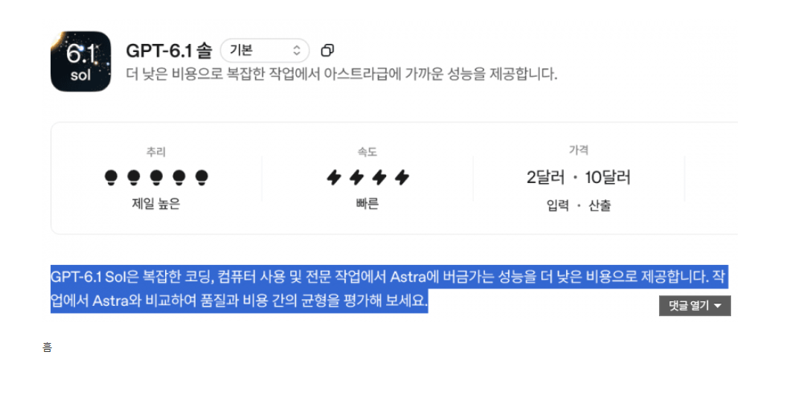

아스트라에 가까운 성능을 1/5 가격에 제공한다고 발표함.
실제 성능이 그런지는 써봐야알겠지만 5.6 테라 택갈이였던 6.0 SOL 대신 이게 진짜 제대로된 SOL 이 될듯함.

실제 성능이 그런지는 써봐야알겠지만 5.6 테라 택갈이였던 6.0 SOL 대신 이게 진짜 제대로된 SOL 이 될듯함.
벤치는 나중에나 뜰듯
지금 조금씩 뜨고 있는데 5.6 하고는 비교불가하게 좋음
아스트라랑 비슷하다고 벤치나왔는데
솔직히 것보단 별로 안좋을듯
6.0 sol 풀린지 일주일은 됐나..?
GPT 개솔만 아니면 대환영
최대로 좋은거까지 안바람. 제발 토큰만 덜탔으면 ㅠ
아니 솔 나온지 얼마됐다고 벌써 ㅋㅋㅋ
벤치는 보고 결정해야할듯 내놓고 씹창내놓는경우도 흔해서...더구나 저렴한것들은 더 의심되지
신한은행 개떢상 ㄷㄷ
ㅋㅋㅋ
태양만세
\[T]/
진짜 하루이틀에 한번꼴로 모델 나오는게 미쳤긴하네
너 핵심을 찌러어어어엇

6솔 반응이 너무 안좋은 와중에 소넷5.5는 오푸스5.5에 이어서 반응 존나 좋으니까 ㅋㅋ 급하겠지
ㄹㅇ
이미 만들어 뒀는데 어?어? 하다 낸듯 ㅋㅋ
쏠라나 사면되냐
아스트라만 써서 몰랐는데 6.0솔 개병신이었다더라
역체감이 ㅈ됨
아스트라만 쓰다니 엄청난 대부호 ㄷㄷ
내가 클로드 개싫어하는데 처음으로 이사준비했었음
6.0솔은 5.6테라보다도 못한거같던데 ㅋㅋ
신한은행의 sol을 벤치마킹한것일까요?
일주일 뒤 : 성능 대폭 개량 된 6.3 SOL 공개
이새끼들 그리고 20x 사용량을 10x로 너프 예정 메일보냄ㅋㅋㅋ
감ㅋㅋㅋㅋ속ㅋㅋㅋㅋ
지피티 앱 업데이트 하니까 6.1 솔 바로 뜨네
2-3개월 뒤엔 이거 Chat에서도 6.1Sol 정도 쓸수 있겠지.
대신 사용자가 쓸 토큰량도 같이 줄여버림 ㅋㅋㅋㅋ
아스트라 2주 천하였다ㅋㅋㅋ fable 5.2는 얼마나 뛰어날려나
이상: 인공지능 개발 속도 늦춰야
현실: 어어 이러다 뒤쳐지겠는데 빨리 다음꺼 해금해!
pro 20x 쓰고 있었는데 그래도 미안하다고 크레딧 주더라. 유효기간 있긴 하지만 개꿀임.
근데 codex가 새벽부터 계속.. 먹통이야
ㅋㅋㅋ어제 푸쉬하라니까 server에러 뜨면서 그것도 못하더라ㅋㅋ
제미나이 ㅅㅂ꺼 연결제 했는데 이제는 거의 심심이수준이거같음
소파 살려고 url 3개넣고 비교표 만들라하니까 엉뚱한제품 비교표 만드네
gpt는 잘하드만
구글드라이브용량땜에 해지도 못해 ㅅㅂ
그냥 웹하드 결제용임ㅋㅋ 5테라 낭낭하다
아니 아까는 챗지피티 망했다매
뭐 엎치락 뒤치락 하는거지 ㅋㅋ
AI감속의 뜻
속도를 줄이자(X)
감히내게 속도경쟁을 해보자고? (O)
이게 진짜 6sol인듯
제미나이는 진짜 뭐하냐 ㅋㅋㅋㅋ.. 이제 데센팔이에 집중하기로 노선 튼건가
5.6 Sol과 비교하면 어떰?